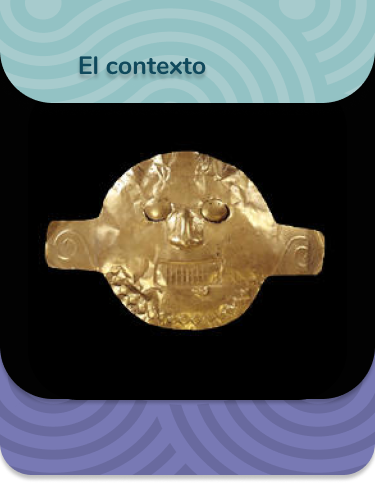

Español
English


Máscara funeraria:
Periodo:
Yotoco (200 A.C – 200 D.C)
Lugar del hallazgo:
Palmira, Valle del Cauca
Material:
Oro
Técnica:
Martillado repujado
Uso:
Esta máscara era usada en ceremonias fúnebres por el chamán.

En 1992, en la planicie del Valle del Cauca, un cementerio de caciques del año 200 d.C. fue objeto de destrucción y saqueo. Excavaciones arqueológicas realizadas en lugares cercanos produjeron información sobre la vida en esa época, pero el conocimiento sobre las circunstancias en que se fue formando este importante cementerio y sobre las personas enterradas en él se perdió para siempre.
Objetos de oro y de cerámica de gran calidad y tamaño fueron frecuentes en Malagana. Parecen haber sido elaborados para ser usados únicamente como ajuares funerarios pues no presentan huellas de desgaste. Algunos difuntos fueron enterrados en el rico cementerio de Malagana con varias máscaras superpuestas: símbolos de la muerte, unas semejan calaveras; en otras, el rostro representado no tiene vida.